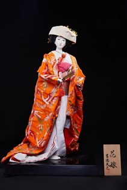

Hanayome (Cô dâu) là hình tượng cô dâu Nhật Bản trong lễ cưới truyền thống, một trong những nghi lễ quan trọng đánh dấu sự khởi đầu của cuộc sống hôn nhân. Hình ảnh cô dâu trong bộ kimono lộng lẫy thể hiện vẻ đẹp thanh lịch, sự đoan trang và niềm hy vọng về một tương lai hạnh phúc.
Búp bê được tạo hình với áo uchikake màu đỏ nổi bật, thêu các họa tiết mang ý nghĩa cát tường như hoa, chim hạc hoặc thực vật truyền thống, tượng trưng cho may mắn, hạnh phúc và cuộc sống sung túc. Trên đầu cô dâu là tsunokakushi – chiếc mũ cưới màu trắng, biểu tượng của sự khiêm nhường, bao dung và mong muốn xây dựng một gia đình hòa thuận.
Từng chi tiết từ gương mặt, kiểu tóc, trang phục đến dáng đứng đều được các nghệ nhân chế tác công phu, phản ánh kỹ thuật làm búp bê truyền thống Nhật Bản. Sự kết hợp hài hòa giữa màu sắc, hoa văn và chất liệu tạo nên vẻ đẹp trang nghiêm nhưng vẫn mềm mại, nữ tính.
Không chỉ là một tác phẩm thủ công mỹ nghệ, Hanayome còn lưu giữ những giá trị văn hóa về hôn nhân và gia đình trong xã hội Nhật Bản. Búp bê thường được trưng bày trong các dịp lễ cưới, làm quà tặng chúc mừng hôn lễ hoặc như một lời cầu chúc cho cuộc sống hôn nhân hạnh phúc, viên mãn và bền lâu.
花嫁は、日本の伝統的な婚礼における花嫁の姿を表したもので、結婚生活の始まりを告げる大切な儀式のひとつを題材としています。豪華な着物をまとった花嫁の姿は、上品さ、しとやかさ、そして幸せな未来への希望を表しています。
人形は目を引く赤い打掛をまとい、花や鶴、伝統的な植物など、幸運・幸福・豊かな暮らしを象徴する吉祥文様が刺繍されています。頭には白い婚礼の被り物「角隠し」をかぶり、慎み深さ、寛容さ、そして円満な家庭を築きたいという願いを表しています。
顔、髪型、衣装、立ち姿に至るまで職人が手間をかけて作り上げており、日本の伝統的な人形制作の技を映し出しています。色彩、文様、素材の調和が、厳かでありながら柔らかく女性らしい美しさを生み出しています。
花嫁は手工芸品であるだけでなく、日本社会における結婚や家族の文化的価値を今に伝えています。婚礼の場に飾られたり、結婚祝いの贈り物にされたりするほか、幸せで円満な、末永い結婚生活への祈りとしても用いられています。